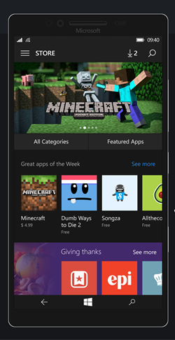

Welcome to MetroStore UWP, the independent web app store for Windows 10 Mobile devices. Discover hundreds of applications and games designed for the platform you love.
Download MetroStore App
A familiar interface, curated for the modern enthusiast.